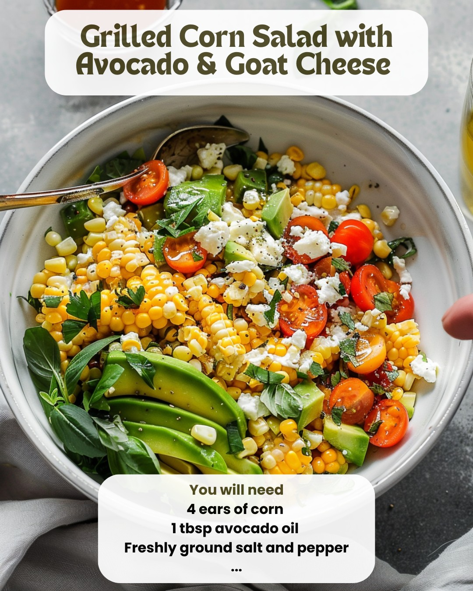

Grilled Corn Salad with Avocado, Goat Cheese & Hot Honey Vinaigrette
Grilled Corn Salad with Avocado, Goat Cheese & Hot Honey Vinaigrette
Description
This vibrant grilled corn salad combines smoky charred corn, creamy avocado, tangy goat cheese, and a sweet-spicy hot honey vinaigrette. It’s the perfect summer side dish or light meal.
Directions
- Preheat grill to medium-high heat.
- Drizzle corn with avocado oil and season with salt and pepper. Grill corn directly on the grill, turning occasionally, until charred and cooked, about 20 minutes.
- Allow the corn to cool, then cut kernels off the cob and transfer to a large bowl. Add cherry tomatoes, diced avocado, crumbled goat cheese, red onion, and basil. Toss to combine.
To make the hot honey vinaigrette
- Add honey and cayenne (or hot sauce) to a small bowl or mason jar and microwave for 10-15 seconds until honey is hot.
- Add the avocado oil, apple cider vinegar, Dijon mustard, garlic powder, salt, and pepper.
- Shake well or whisk to combine. Adjust spice level with extra cayenne or hot sauce if desired.
- Pour the vinaigrette over the salad, toss to coat, and season with salt and pepper to taste. Serve immediately.
Note: If preparing in advance, add avocado and goat cheese just before serving.
Prep Time: 20 minutes | Cook Time: 15 minutes | Total Time: 35 minutes
Kcal: 180 kcal | Servings: 6
Ingredients
For the Grilled Corn:
- 4 ears of corn
- 1 tbsp avocado oil
- Freshly ground salt and pepper
For the Salad:
- 1 1/2 cups halved cherry tomatoes (heirloom or grape)
- 1 avocado, diced
- 1/3 cup crumbled goat cheese
- 1/4 cup diced red onion (or green onion)
- 6 large basil leaves, julienned
For the Hot Honey Vinaigrette:
- 2 tbsp avocado or olive oil
- 1 tbsp honey
- Pinch cayenne pepper or 1/2 tsp hot sauce
- 2 tsp apple cider vinegar (or fresh lime juice)
- 1/4 tsp Dijon mustard
- 1/8 tsp garlic powder
- Freshly ground salt and pepper
Image
